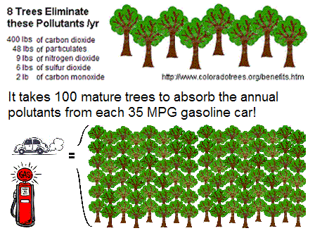
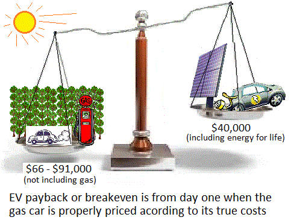
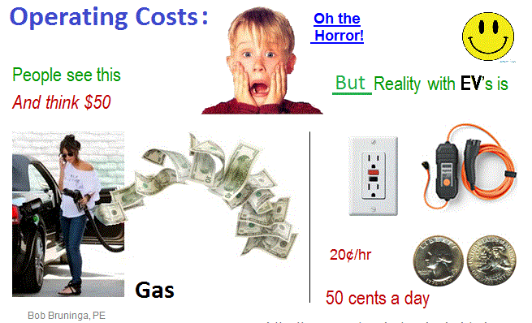
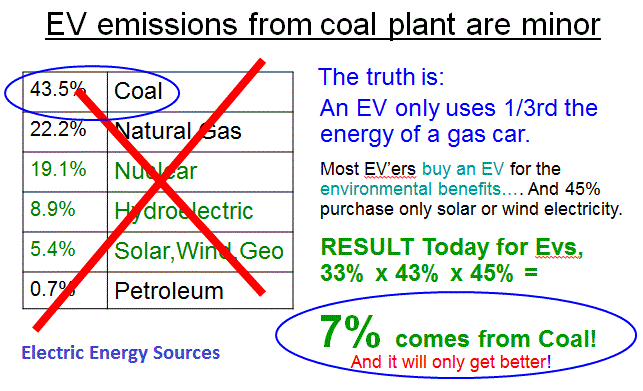

EV's are usually only compared by Purchase Price...: And this is only one of very many misunderstandings about EV's. In fact, almost everything we think we know about EV's is mostlly wrong!
See EV-misinformation.html
See Powerpoint on EV misconceptions.
See
NPR interview by Jessica Gould or
hear it (2 mins).
See EV speech at Driving Maryland Green 11 Oct 2012
Download IEEE Paper on L1 Charging. 97% of charging-at-work can use 120v outlets 
Other Related Pages:
Payback Hogwash: Are you tired of hearing the 8 to 10 year "payback" or break-even for EV's compared to gasoline cars? You should be. The payback is from day one. The reason is, that the EV is part of the solution to our clean-renewable energy future and the gasoline car is just a continuation and compounding of the problem! Too many people simply compare the purchase price of the vehicle and the cost difference between electricity and gasoline while completely ignoring the #1 cost of operating the vehicles which is the environmental cost.
 Emission Mitigation: Yet the cost to mitigate the carbon emissions from the tailpipe of the gas car are very significant. It takes about 100 trees as shown here, to mitigate and absorb the carbon and other annual emissions from a 35 MPG gasoline car. The hard part is determing the cost of those trees to mitigate the gasoline car. A brute force retail method is to assume that 100 trees is about 0.9 acres. Not counting the cost of the land, the cost of the trees at retail rates for 1.5" caliper starter-trees is about $200 each. Adding that to the cost of the Gasoline car just to BREAK EVEN with the environment is $20,000. If you include the costs of planting, then the cost goes up to about $35,000 per gas car.
Gasoline Mitigation Cost:Another approach with respect to the value of trees is to take the Maryland Department of Natural Resources method for determinig the posted bond required to plant tress to mitigate against any disturbance in the critical areas. The figure they use is about $1.50 per square foot of land mitigation. Scaling that up to the one acre yields a figure close to $60,000 as the legal mitigation expense to offset just a single gasoline car. Add in the average sales price of gasoline cars in the USA in 2013 of $31,000 and we get an overal cost to drive a gasoline car from $66,000 to $91,000, not counting the cost of gas!.
EV Mitigation Cost: To be fair and balanced, we should also address the mitigation cost of energy to drive the EV the same number of annual miles. Notice that we include a solar array on the EV's side of the balance so that it's emissions are completely carbon free. This is not as unusual as you might think. Remember that most of those people (about 50%) who buy EV's also buy clean energy. And with deregulation of the utilities, purchasing clean energy (solar or wind) is as easy as calling your utility. Survey's show that even those that do not buy solar/wind say that they would if it were offered in their area.
But if you want to install your own EV charging panels, for the national average 12,000 mile annual driving miles (though the EV is usually less since it is only used for local travel) the energy needed is about 3000 kWh per year. The solar panel size to produce that annual energy is about 2.5 kW or about 10 panels. At the going price of installed solar of about $4/Watt this works out to about $10,000. Added to the cost of an EV (Average of $30,000 in 2013) we get an overall cost to drive an EV including fuel/energy for the life of the car of only about $40,000
 Fuel Cost: Generally EV's are considered to have between 1/3rd to 1/4th the fuel cost. Said another way, the cost of driving an EV is about the same as driving on gas at 75 to 95 cents per gallon. For the American average 15K miles/year this equates to a fuel cost of only about $500 per year. This is a significant savings compared to a 35 MPG car that consumes $1500 of gas a year, or a pickup truck (the #1 selling car in America) which burns as much as $3000 per year. But this comparison ignores several important facts. One of which is the hundred-to-one difference in transaction costs between the weekly fill-up at the gaspump ($50) and the daily charge-at-work (50 cents) shown here. (Add in another 50 cents for charging overnight at home).
Off-Peak-Charging is often ignored: The first thing these calculations ignore is that the actual cost of electriciy for an EV is not the national "average" of say 10 cents per kWH. As more and more utilities recognize the value of EV's to balancing the daytime/nighttime load, they are beginning to offer night-time charging rates as low as 3.5 cents per kWh. Even adding in the usual utility overhead to bring this up to an actual 5 cents per kWh in effect further halves the cost of the EV.
Emissions: But the real difference between a gas car and an EV is in emissions reduction and the environmental benefits of the EV which are never included in the "payback or breakeven" simplistic comparisons. There are two contributing factors to this ignorance. First is the common fallacy that EV's only move emissions from the tail pipe to the coal plant. Second, the actual cost of continuted burning of gasoline to our environment is simply ignored in the comparison.
 EV emissions are 7% of Gas car emissions: The actual emissions that an average EV moves to the coal plant is only 7% of the tail pipe emissions of a gas car, not 100% as implied by the conservative commentators. The main factor that is always overlooked is the simple demographic that Most people who buy EV's also buy clean energy! And even that percentage is getting cleaner every day as we clean up the grid....
Continuted Gas burning is not free! This is where the concept of pay-back and breakeven on comparisons of EV's with gasoline cars fails to consider the cost to the environment of burning gasoline which the EV does not have to bare. So next time you hear someone trying to make a payback or breakeven comparison, say Hogwash!
That Payback is from Day One!
Bob Bruninga
IEEE National Committee on Transportation and Aerospace
EV Association of DC
lastname@usna.edu
See also the page on Payin-to-Plugin for easy use of 120v outlets at work.
See also the page on EV and Gas Road and Environmental Use Taxes maintaining Parity
See also my Solar PHEV, a work in progress...
{kind=link}
{kind=link}